【笔记】计算机组成 (Part I)
Part I 包含第一、三章，涉及导论内容和计算机运算问题。
Chapter 1. Computer Abstractions and Technology
History & Development
- 第一代：电子管 / 真空管
- 第二代：晶体管
- 第三代：集成电路
- 第四代：微处理器
Computer Organization
-
Hardware
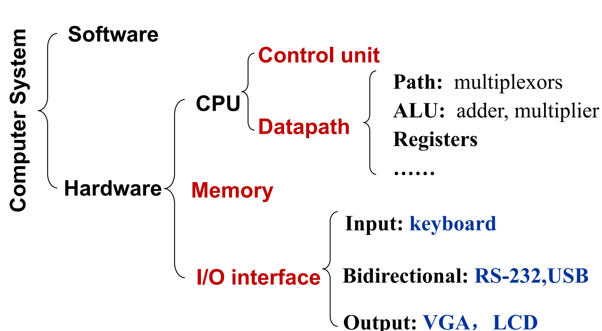
Datapath 可以理解为一条「流水线」。
-
Software
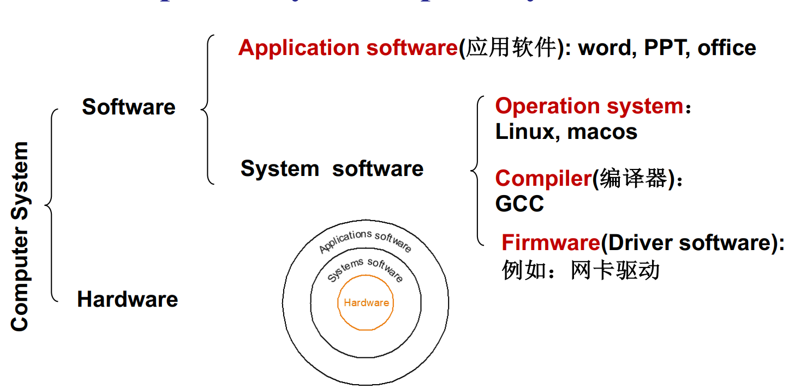
指令集（ISA）
-
ISA: The interface between hardware and lowest-level software.
指令集筑起了「硬件」与「软件」之间的桥梁。硬件生产厂商只需要支持指令集中的特定操作，而软件厂商只需要借助这些基本指令集来开发软件。
CPU Time Calculation
-
Basic Concepts
-
[CONCEPT] Response Time (Execution Time)：响应时间，how long it takes to do a task.
-
[CONCEPT] Throughput (Bandwidth)：吞吐率，total work done per unit time.
-
-
Performance Measurement
假设 X 比 Y 快 $n$ 倍，那么 $\frac{\text{Execution Time}_Y}{\text{Execution Time}_X}=n$。
-
Clock
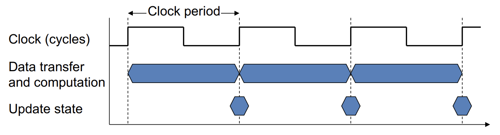
-
[CONCEPT] Clock Cycle Time: duration of a clock cycle.
-
[CONCEPT] Clock Rate: cycles per second，与 Clock period 成倒数。
-
CPU Time = CPU Clock Cycles × Clock Cycle Time = CPU Clock Cycles / Clock Rate
-
-
Considering Instructions
-
[CONCEPT] CPI: Cycles Per Instruction. CPI 的值由 CPU 本身决定，同时也受到指令种类的影响（例如，加法和乘法所需要的 Cycles 肯定不一样）。
-
Clock Cycles = Instruction Count × CPI
CPU Time = Instruction Count × CPI × Clock Cycle Time = Instruction Count × CPI / Clock Rate
-
考虑不同 Instruction Type 对 CPI 的影响……
$\text{Clock Cycles} = \sum\limits_{i=1}^n (\text{CPI}_i \times \text{Instruction Count}_i)$
加权平均 CPI（global CPI）：字面意思。
-
-
Power Spent
$\text{Power} = \text{Capacitive load}^2 \times \text{Voltage} \times \text{Frequency}$
-
习题演示
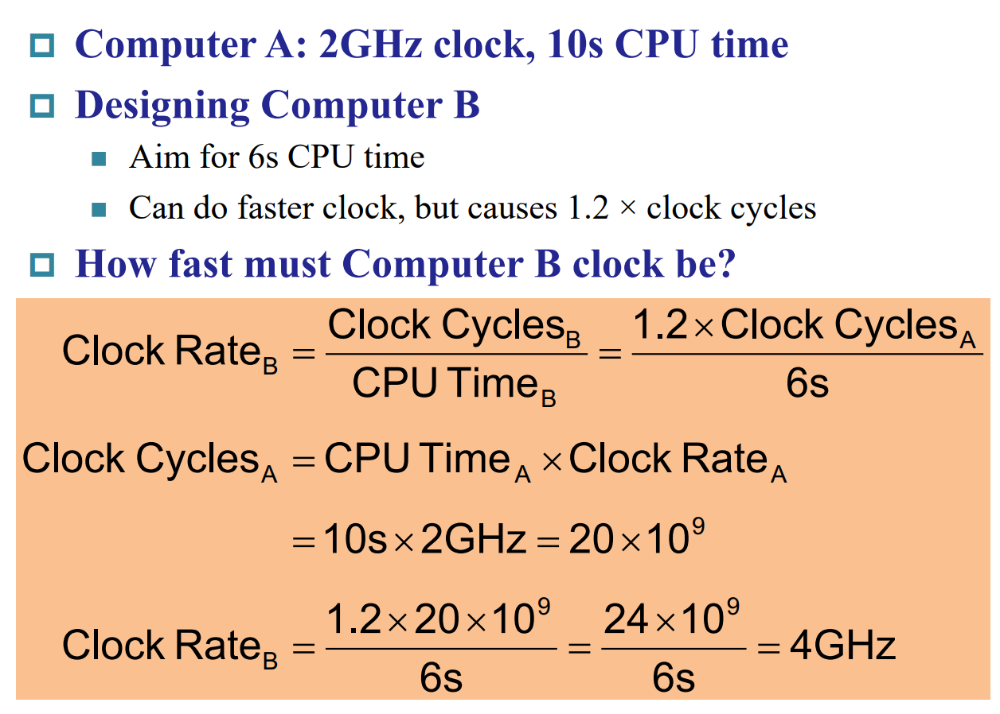
Some Pitfalls / Fallacies
-
Amdahl’s Law 提升局部不一定能提升总体
$$ T_{imporved} = \frac{T_{affected}}{\text{improvement factor}} + T_{unaffected} $$
其中 $T_{imporved}$ 表示提升后的总用时。$\text{improvement factor}$ 表示受影响的提升方面的提升比例。此公式意在说明，对于某种提升，只有 affected 的部分会变快，unaffected 的部分怎么都不会变快。
例如，一个程序需要执行 80s 的乘法和 20s 的除法。无论乘法提升了多少，我们都无法把总时间提升 5 倍。
-
Low Power at Idle 功耗和负载不成正比
对于 i7 power benchmark，100% 负载下的功耗为 258W，50% 负载下为 170W，10% 负载下为 121W。也就是说，一味降低 CPU 的负载不一定能起到节能的效果。
-
MIPS as a Performance Metric? MIPS 是否能作为衡量 CPU 运行速度的参数？
MIPS: Millions of Instructions Per Second
$$ \text{MIPS} = \frac{\text{Clock Rate}}{\text{CPI} \times 10^6} $$
之前提及，CPI 除了受 CPU 本身的影响，也受到 CPI 种类等因素的影响。不同电脑的指令集架构不同，进而导致 CPI 不同；同时，不同指令的 CPI 也不一样。所以 MIPS 并非一个只和 CPU 本身有关的量。所以用 MIPS 来衡量 CPU 的运行速度是不合理的。
Eight Great Ideas
-
Design for Moore’s Law (设计紧跟摩尔定律)
-
Use Abstraction to Simplify Design (采用抽象简化设计)
-
Make the Common Case Fast (加速大概率事件)
-
Performance via Parallelism (通过并行提高性能)
-
Performance via Pipelining (通过流水线提高性能)
-
Performance via Prediction (通过预测提高性能)
-
Hierarchy of Memories (存储器层次)
-
Dependability via Redundancy (通过冗余提高可靠性)
-
Some illustrations:
Use Abstraction to Simplify Design:
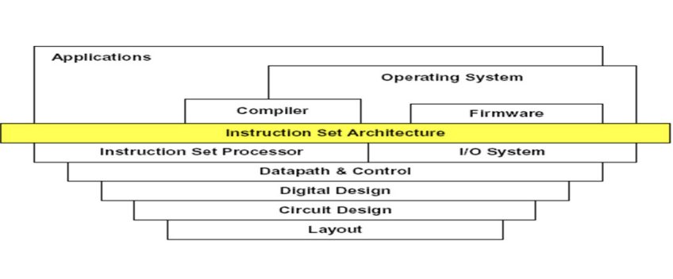
Performance via Pipelining:
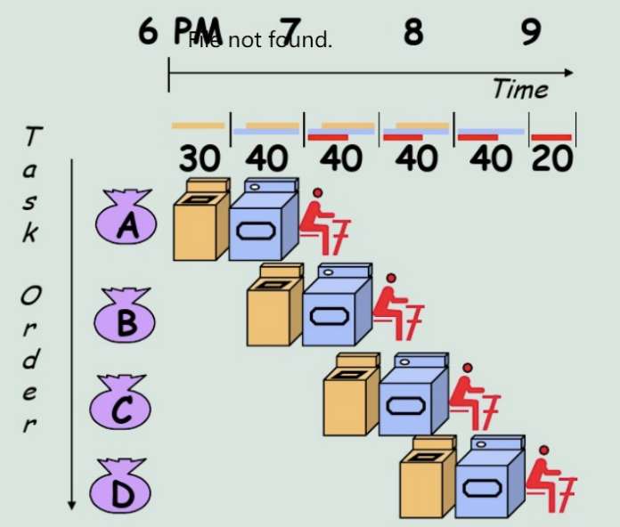
Chapter 3. Arithmetic for Computer
Signed Numbers Representations
| Binary | Signed Magnitude | 2’s Complement |
|---|---|---|
| 000 | +0 | +0 |
| 001 | +1 | +1 |
| 010 | +2 | +2 |
| 011 | +3 | +3 |
| 100 | -0 | -4 |
| 101 | -1 | -3 |
| 110 | -2 | -2 |
| 111 | -3 | -1 |
一般采取补码的表示方式。
Addition and Subtraction
减法可以改成加补码。这样加和减都统一成了加法。
加减法都可能产生 overflow。例如：
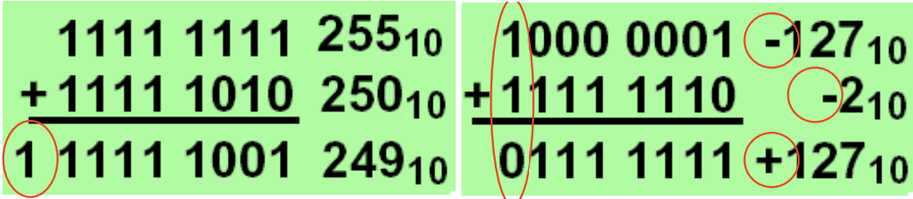
overflow 的判定遵循下表：
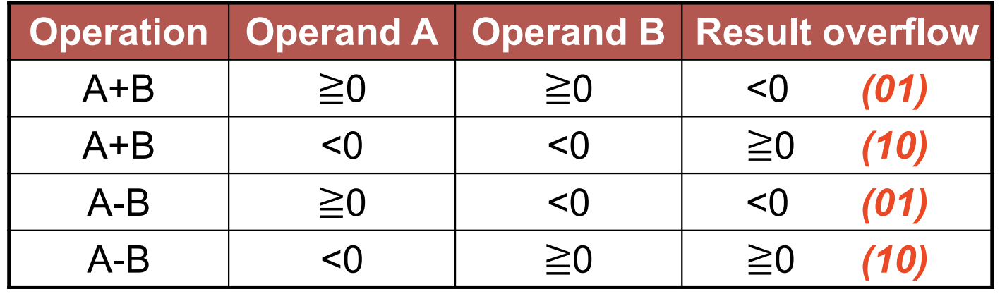
-
此处的 overflow 专指「溢出导致错误的计算结果」。例如 $(-1)+(-1)=(-2)$ 我们不认为发生了 overflow。
-
只有以上四种 A, B 组合才可能产生 overflow。例如一个正数加一个负数是不可能产生 overflow 的。
-
Result overflow 括号中的两个数分别表示「溢出位」和「最高位」。例如 $7+7=(0111)_2+(0111)_2=(1110)_2=-2$，其溢出位（第 4 位）为 $0$，最高位（第 3 位）为 $1$，属于表中的第一行情况。
-
可以看到「溢出位」和「最高位」在溢出情况下总是相反的，这意味着我们可以使用 XOR 门进行判定。
ALU
考虑建立具有如下功能的 ALU：
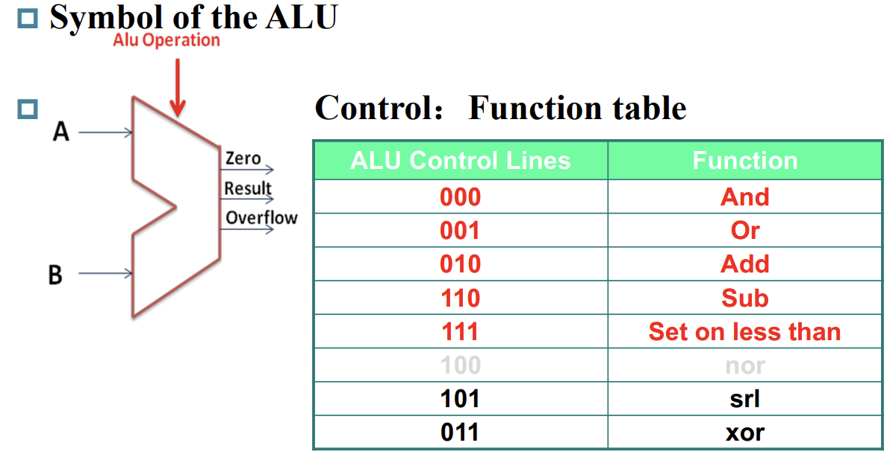
其中 srl 表示 shift right logical，Zero 位宽为 1，输出 1 当且仅当 Result 为 0。
-
And 与 Or
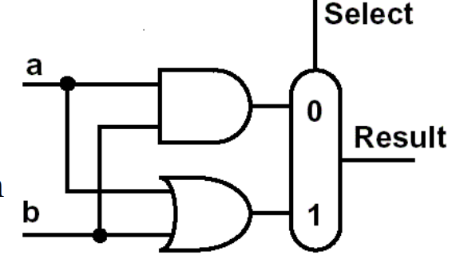
-
Add
全加器，$S=a \oplus b \oplus C_{in}, \ C_{out}=ab+aC_{in}+bC_{in}$。
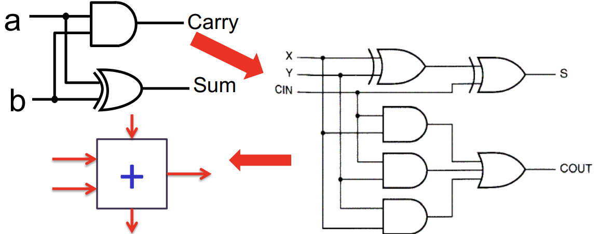
-
Sub
减法就是加上补码。考虑 And / Or / Add / Sub 的 ALU 设计如下：
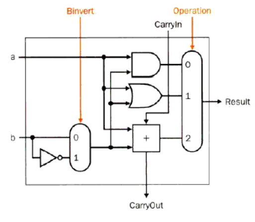
-
Set on less than (Comparison)
用于比较输入项 $a,b$ 的大小，如果 $a < b$，那么输出 $1$，反之输出 $0$。
实现方法是执行减法运算，看最高位（符号位）是否为 $1$ 即可。
考虑 And / Or / Add / Sub / Set on less than 的 ALU 设计如下：
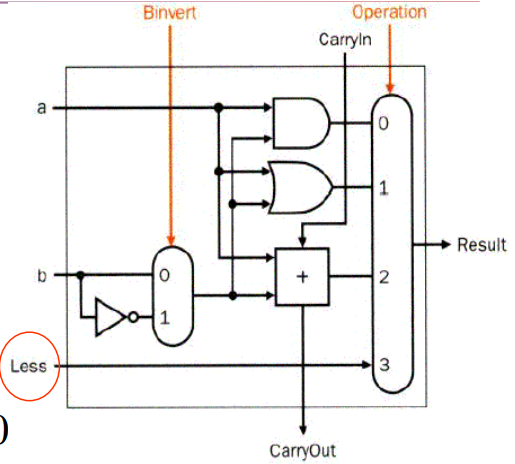
其中 MSB 的设计有略微不同（加入了溢出检测模块，输出 Set 和 Overflow 信号）
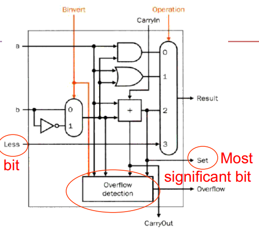
最后我们考虑建立整个 ALU。
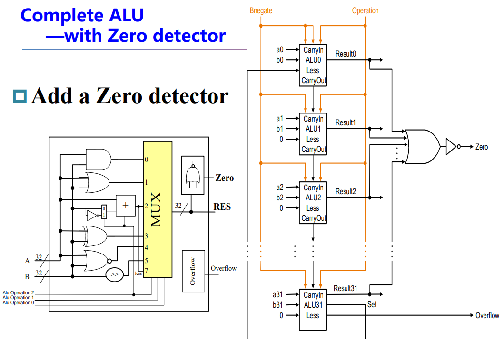
注意到 MSB 的 Set 连到了 LSB 的 Less 输入，用于执行 Comparison 运算；非 LSB 的 Less 输入均为零。
Fast Adder
Carry Lookahead Adder (CLA) 加速运算：本质上是把行波加法给「压缩」了。但受到 fan-in of gate 的影响，只有分组「压缩」。
此部分数逻已经学过，在此不再赘述。
Multiplication
名词：被乘数（multiplicand），乘数（multiplier），积（product）。
-
Multiplier Ver 1
Look at current bit position.
-
if multiplier is 1, then add multiplicand.
-
Otherwise add 0.
-
Shift multiplicand left by 1 bit.
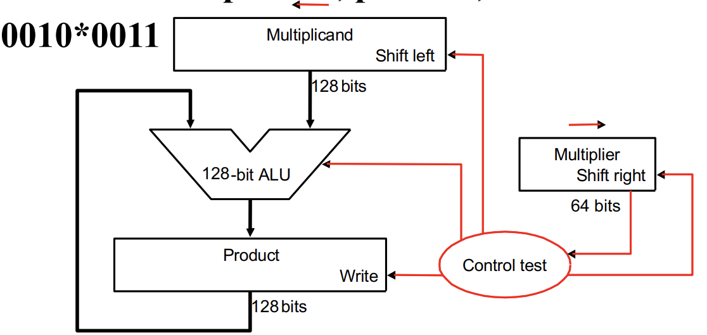
其实就是模拟的竖式乘法。对于两个 64 bits 的整数相乘，需要 128 bits 的寄存器存储积，同时也需要一个 128 bits 的 ALU 来执行加法。
-
-
Multiplier Ver 2
在第一版乘法器的基础上，第二版将「左移 multiplicand」改成了「右移 product」来减小 ALU 的开销。原理图和举例图如下。
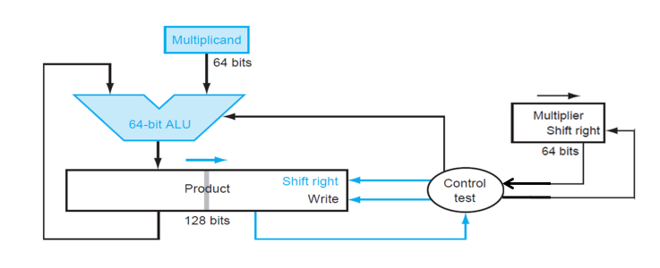
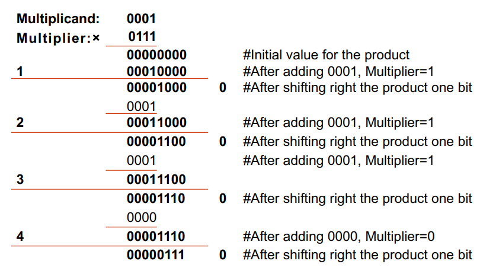
注意每一次是将 multiplicand 加到 product 左边的 64 位，而后进行不断的右移。对于两个 64 bits 的整数相乘，需要 128 bits 的寄存器存储积，但只需要一个 64 bits 的 ALU 来执行加法。
-
Multiplier Ver 3
基于第二版乘法器进行了一点小优化。回顾我们使用的 128 位的存储积的 reg，刚开始 reg 的右 64 位是空的，这意味着说我们可以将其用于存储 multiplier。并且随着后续 product 和 multiplier 的右移，两者也不会产生空间上的冲突。
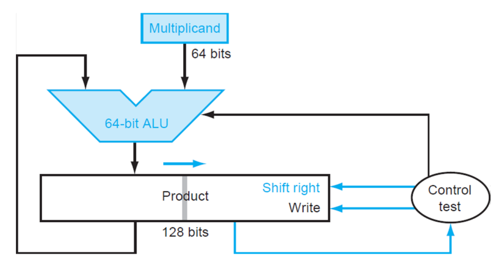
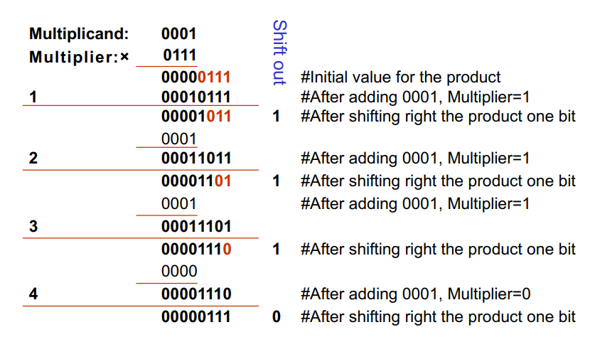
红色部分存储的是 multiplier。可以看到 multiplier 和 product 共用一个 reg。
-
有符号乘法
考虑有符号整数乘法。一种基本的方法是，符号和绝对值分开考虑。符号位直接进行 XOR，随后将 MSB 设为 0（去除符号位）并执行无符号乘法，最后将符号和绝对值的积合并即可。
此外还有一种方法：Booth’s Algorithm.
-
Booth 算法
Booth 算法的执行基于第三版乘法器，但是做了一定的优化。Booth 算法在加速了乘法的同时，也使得有符号的乘法运算更加统一（即不需要传统方法的分类讨论）。
考虑被乘数为 $y$，乘数为 $10111100$。按照第三版乘法器的做法，会执行 $8$ 次 shift 操作和 $5$ 次 add 操作。如果我们将 $10111100$ 改写为 $2^7+2^6-2^2$，则只需要执行 $8$ 次 shift 操作和 $3$ 次 add/sub 操作（在此我们假设 shift 速度快于 add/sub）。
-
流程
每次考察乘数的 0 位和 -1 位（此处 -1 位是人为补足的，初始为 0）。并按照以下表格执行操作：
bit(0) and bit(-1) Operations $10$ Subtract multiplicand from left half $11$ No arithmetic operations, just shift right $01$ Add multiplicand to left half $00$ No arithmetic operations, just shift right 此处依然是按照第三版乘法器那样将 product, multiplier 放在一起存储，且每次 shift right 都是将两者一起右移。
同时：每次右移最高位的不足不再是无脑补零，而是和原最高位一样补（即每次右移保持符号位不变）。
-
例子
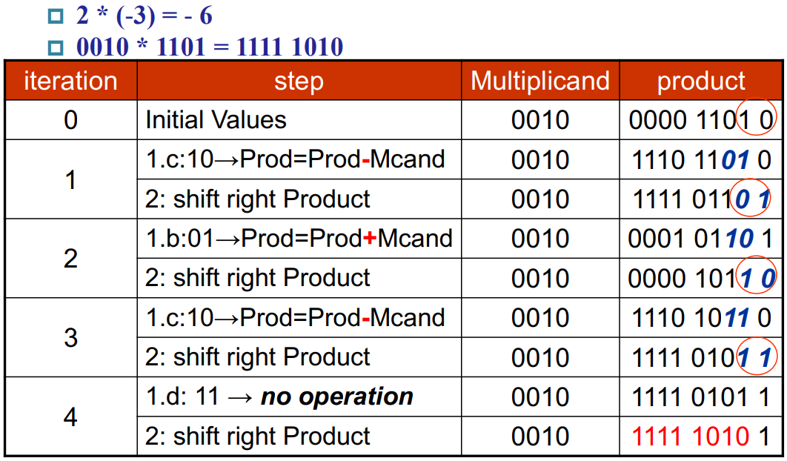
注意执行的轮次数和乘数的 bit 数一致。第一轮是 10，第二轮是 01，第三轮是 10，第四轮是 11，第五轮（本来是 11）无需执行。
-
一些粗浅的理解
关于加减法： 遇 10 则减，遇 01 则加其实比较好颅内理解。00 和 11 不干事都是为了「把锅甩给后面的高位」。
关于右移最高位补足、为何不进行第 5 轮： 首先考虑另外一个问题，为什么常规无符号乘法无法做有符号的乘法。例如，$0010 \times 1101 = 00011010$，正负得正，显然是有问题的。
实际上问题出在位数不足。补齐后 $00000010 \times 11111101 = 11111010$ （取低 8 位）就没有问题了。
然而把四位乘法转化为 8 bits × 8 bits 做是有点亏的，同时注意到有很多连续的 1 似乎加法也会很多。所以使用 Booth’s Algorithm。
解答这个问题可能需要考虑 8 bits × 8 bits 的本原做法。比如在 iteration 1 中要减去被乘数，在算法中体现的是 +1110，然而实际上应该是 +11111110。这样在整体右移一位之后最高位确实应该为 1。
为何不进行最后一轮似乎也和这个有关。像比如上图的例子，按理说最后应该再做一个 left half 的 +0010 才对，然而当我们把乘数 $1101$ 补全为 $1111 \ 1101$ 后，发现实际上这个 +0010 应该在 iter 9 执行，实际上表现出来的就是溢出了 8 bits 的范围。
-
Division
名词：被除数（dividend），除数（divisor），商（quotient），余数（remainder）。
-
Division Introduction
-
除数为 0 一般交由软件判断。
-
有符号除法一般将符号和绝对值分开讨论。
-
-
Division Ver 1
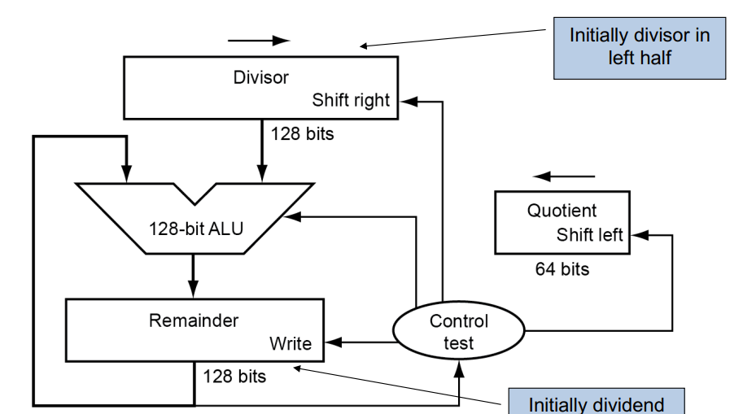
假设 dividend 和 divisor 都是 64 位的。
-
首先将实际的 divisor 放到高 64 位（低 64 位为零）。remainder 初始设置为 dividend。
-
接下来每次拿 remainder 减去 divisor。若减后 remainder 大于等于 0，则将 quotient 左移并将 LSB 设为 1；若减后 remainder 小于 0，则恢复原值（把 divisor 加回去），同时也将 quotient 左移。
-
将 divisor 右移一位。重复 65 次。
其实就是模拟的竖式除法。一个示例如下。
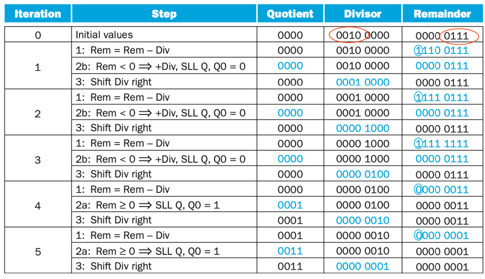
-
-
Division Ver 3
和之前的 Multiplier V3 一致的思路：将 remainder 和 quotient 放在一个 reg 中存放。
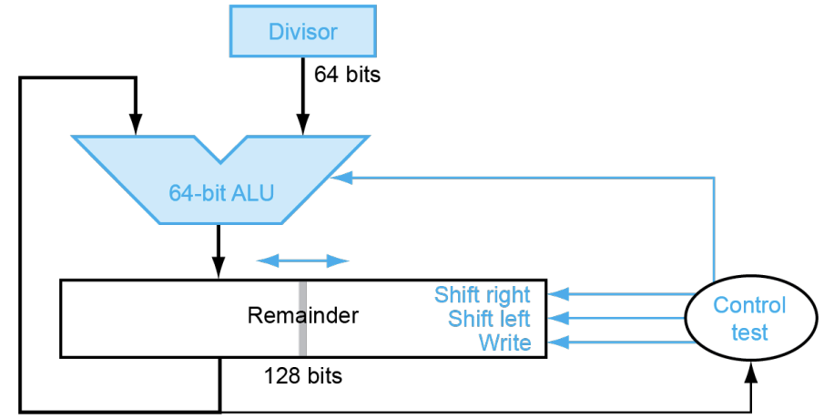
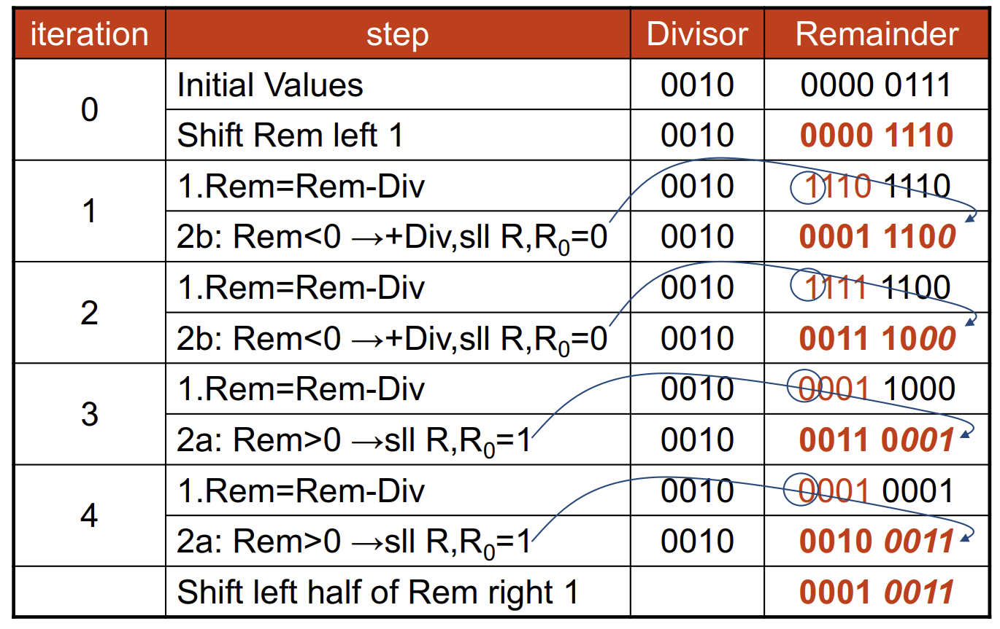
注意初始的时候就可以将 remainder 左移一位（对应 iter0，因为第一次必然失败）。最后 reg 中的 left half 即为 remainder，right half 即为 quotient。
Float
-
浮点数的存储与定义
浮点数的存储分为三部分。
- float：符号位 $S$ (1bit)，指数位 $E$ (8bits)，系数位 $F$ (23bits)。
- double：符号位 $S$ (1bit)，指数位 $E$ (11bits)，系数位 $F$ (52bits)。
其意义为二进制下的科学计数法表示：$(-1)^S \times 1.F \times 2^{E+bias}$。
实际使用时指数位 $E$ 会有偏差 $bias$，这是为了处理 $E$ 可能为负的情况。对于 float，$E$ 存储值比实际值大 $bias=127$；对于 double，$E$ 存储值比实际值大 $bias=1023$。
特别规定：
- 当 $E=111…11, \ F=000…00$，表示此浮点数为无穷。
- 当 $E=111…11, \ F \neq 000…00$，表示此浮点数为 NaN。
-
浮点数加法
算法流程与示例：
-
比较两数的指数位，确定大小关系并把指数位较小的通过 $F$ 右移（小数点则向左移动）使得两操作数的指数位 $E$ 一致。
-
将 $F$ 相加。
-
归一化（比如加法之后产生了进位，那么 $E$ 应当加一，$F$ 则右移）。
-
Rounding（比如四舍五入）
-
再次归一化（例如 9.99 round 后变为 10.00，此时需要再次归一化，当然这只是一个十进制的例子）
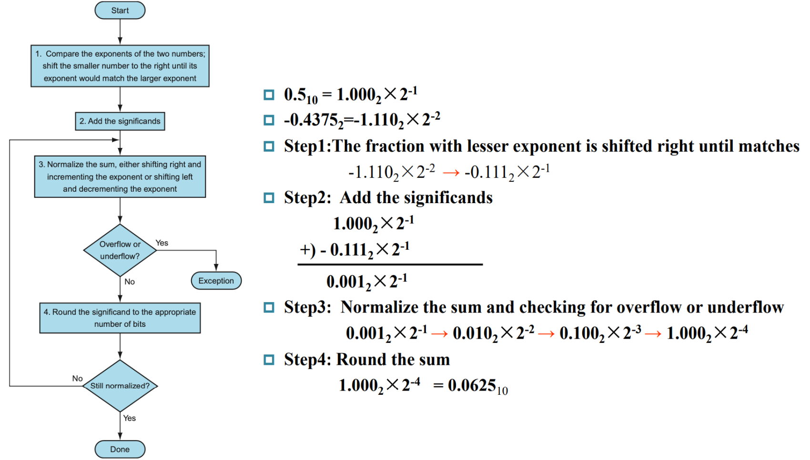
逻辑结构图绘制：
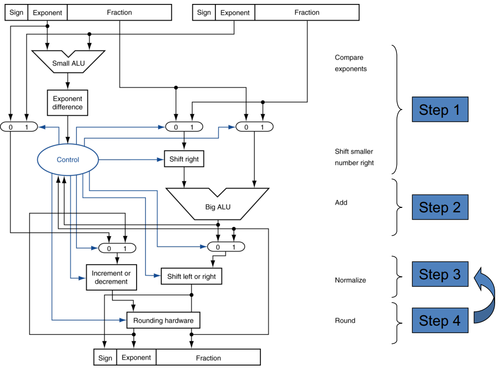
-
-
浮点数乘法
区别主要集中在：
- 符号位单独处理
- 指数位 $E$ 相加后要减去对应的 $bias$。
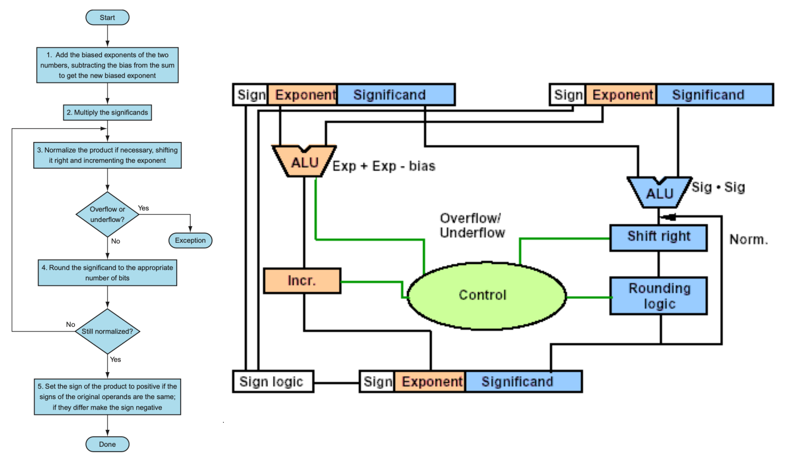
-
Accurate Arithmetic 浮点数精度问题
一些术语：
-
保留位 (guard bit)：第一个被舍掉的位。
-
近似位 (round bit)：guard bit 的后面一位，亦即第二个被舍掉的位。
-
粘滞位 (sticky bit)：round bit 后面的所有位的 OR 构成 sticky bit。
Rounding 规则如下：
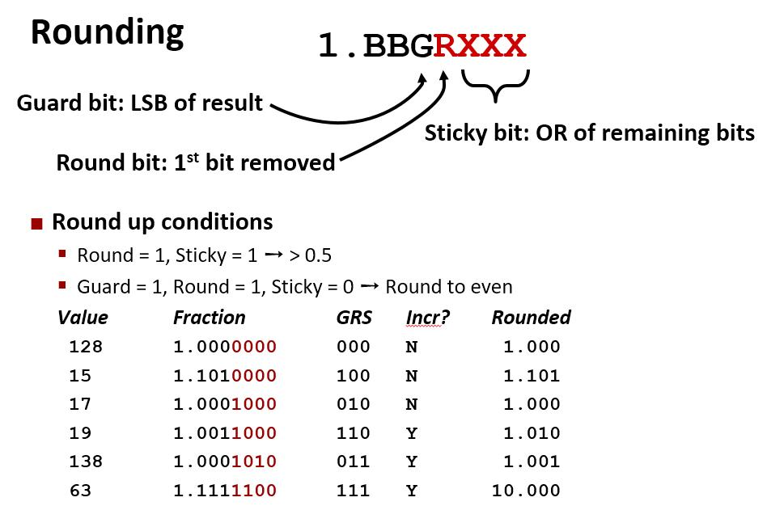
-